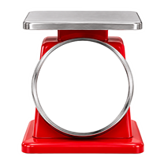

센서의 이름과 알맞은 역할을 선으로 이어 볼까요?

주변의 차가움과 뜨거움을 숫자로 감지해요.
누르는 힘과 무게를 감지해요.
연기나 위험가스를 감지해요.
사람이나 물체의 움직임을 감지해요.
물이 새거나 차오르는 것을 감지해요.
정말 잘했어요!
각 센서의 역할을 정확하게 분류했어요.
이제 이 센서들이 집 안 어디에 설치되어 있는지 직접 찾아볼까요?
 온·습도 센서
온·습도 센서 동작 센서
동작 센서 침수 센서
침수 센서 가스 센서
가스 센서